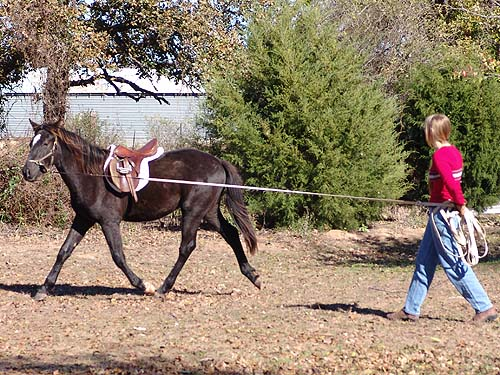
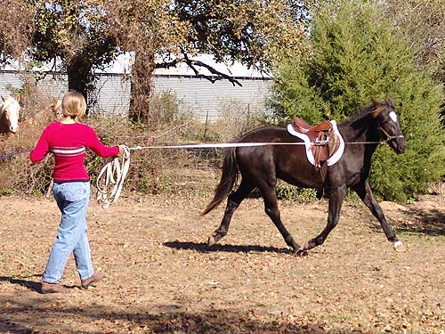

Miaren Starting Training Thanksgiving at the parents' place gave
me a chance to
introduce Miaren to a saddle and lunging.
He acted like he already
knew what to do and seemed to love the
attention.
Miaren wasn't exactly willing to stand
without being tied or held. He'd keep turning around to see what I was
doing and try to get petted.
Curious about the saddle, but not
too concerned about having it on.
Getting organized to lunge while he
waited patiently.
No grazing while you lunge, but stretching
down is ok.
He was completely unconcerned about the
saddle being on him. He's just not scared of much of anything.
Still getting organized, but he'd
watched Thistle and knew what to do.
He'll be coming two this spring, and
has been to a show and now saddled and lunged. With 2 3-year olds next
year, he probably won't get worked much, but he's showing that training's
not going to be difficult.
Now trotting on the lunge. No bucking
or balking. A little kick out at the lunge whip when I popped him for ignoring
my request.

He's at 15 hh or so right now. I've
seen other TB crosses by his sire that ranged from 15.1 to 16.3. The string
test puts him at 16.2, so we'll just have to wait and see.

Asking for a little more forward.
He's got a balanced enough canter that he won't have trouble with it on
the lunge. But, I won't ask for that til next year, after he's had more
experience on the lunge.
Watching me and showing he can flex.
It was a short session, because he did everything I asked.
Lots of praise, because that's what
he wants the most.